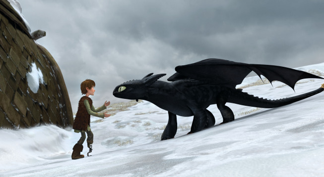

-
Night Fury
- Description: The rarest and fastest dragon species.
- Jet-black scales and sleek, aerodynamic body.
- Shoots plasma blasts.
-
Deadly Nadder
- Description: A brightly colored, bird-like dragon.
- Shoots magnesium-rich spines from its tail.
- Extremely agile and sharp-sighted.
-
Gronckle
-
Description: A stout, boulder-shaped dragon with tiny wings.
- Chews rocks to create molten lava blasts.
- Surprisingly nimble in flight despite its appearance.
-
Monstrous Nightmare
-
Description: One of the most fearsome dragons, known for its
aggressive nature.
- Can ignite its entire body in flames for intimidation.
- Sleek and powerful with large wings.
-
Hideous Zippleback
- Description: A two-headed dragon with dual abilities.
-
One head releases flammable gas, and the other ignites it with
sparks.
- Known for its stealth and cunning nature.
Night Fury
